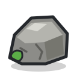
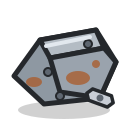
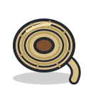
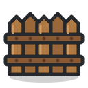
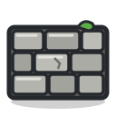
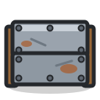

| Material | Used for | Found mostly at | |
|---|---|---|---|
| Wood | Walls, spikes, logs, torches | Forest edge |
 | Stone | Stone walls, falling rocks | Quarry |
 | Scrap metal | Metal walls, bear traps, rattles | Junkyard |
 | Rope | Swinging logs, nets, rock drops | Farm |
| Wire | Circuits (trigger → mechanism), tripwires | Junkyard |
| Gears | Pressure plates, bear traps | Junkyard |
| Cloth | Torches, nets | Suburbs | |
| Glass | No demo use (Expansion: lanterns, chimes) | Suburbs |
| # | Item | Type | Recipe | Effect | |
|---|---|---|---|---|---|
 | 1 | Wood wall | Barricade | 3 Wood | Blocks a tile; weak |
 | 2 | Stone wall | Barricade | 3 Stone | Blocks; strong |
 | 3 | Metal wall | Barricade | 2 Scrap + 1 Wood | Blocks; strongest |
 | 4 | Wood spikes | Floor trap | 2 Wood | Damages walkers; wears out |
 | 5 | Bear trap | Floor trap | 2 Scrap + 1 Gear | Holds one zombie |
 | 6 | Tripwire | Trigger | 1 Wire | Fires its circuit when any zombie crosses |
 | 7 | Pressure plate | Trigger | 1 Wood + 1 Gear | Fires only for heavy zombies (Brutes) |
 | 8 | Swinging log | Mechanism | 2 Wood + 2 Rope | Sweeps a 3-tile lane, knocks back |
 | 9 | Falling rocks | Mechanism | 3 Stone + 1 Rope | Big hit on one tile |
 | 10 | Net drop | Mechanism | 2 Rope + 1 Cloth | Holds everything on 2 tiles |
| 11 | Tin can rattle | Lure | 1 Scrap + 1 Rope | Noise all raid; pulls zombies toward it | |
| 12 | Torch | Light | 1 Wood + 1 Cloth | Zombies drift toward light; lights the night |